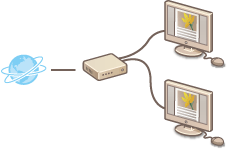
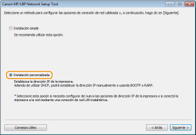
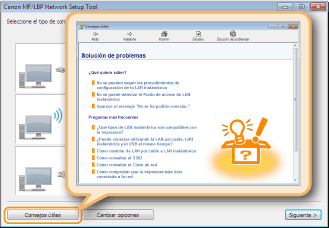

0KUC-00K
Conecte la impresora a un ordenador a través de un router con cable. Utilice un cable de red para conectar la impresora al router.
|
 |
¿Ha conectado el ordenador y el router correctamente con un cable de red? Para obtener más información, consulte los manuales de instrucciones de los dispositivos que está utilizando o póngase en contacto con el fabricante.
¿Ha finalizado la configuración de red en el ordenador? Si la red no se ha configurado correctamente, no podrá utilizar la impresora en la red cableada, aunque realice los procedimientos que se indican a continuación.
|
|
|
|
Al cambiar el método de conexión de red inalámbrica a red cableada
Deberá desinstalar el controlador de impresora actual, configurar la conexión de red cableada y, a continuación, volver a instalar el controlador de impresora. Cuando configure la conexión de red cableada, seleccione [Instalación personalizada] como método de configuración.
 |
 |
|
La impresora no incluye cable de red ni router. Usted deberá encargarse de tenerlos listos según corresponda. Utilice un cable de par trenzado de la Categoría 5 o superior para la red.
Asegúrese de que haya puertos disponibles en el router para conectar la impresora y el ordenador.
Consulte el "e-Manual" que acompaña a la impresora para obtener información sobre los tipos de Ethernet compatibles con la impresora.
La red cableada y la red inalámbrica no pueden utilizarse simultáneamente.
Si utiliza la impresora en una oficina, póngase en contacto con el administrador de su red.
|
1
Inicie sesión en el ordenador con una cuenta de administrador.
2
Abra la MF/LBP Network Setup Tool.
Hay dos formas de abrir la MF/LBP Network Setup Tool: "Abrir desde el CD-ROM/DVD-ROM" y "Abrir desde un archivo descargado".
Abrir desde el CD-ROM/DVD-ROM
Abrir desde un archivo descargado
Abrir desde el CD-ROM/DVD-ROM
Abrir desde un archivo descargado
3
Para configurar las opciones de red cableada, siga las instrucciones de la pantalla.


Si hay algo que no entiende
Haga clic en [Consejos útiles] en la parte inferior izquierda de la pantalla para mostrar consejos de solución de problemas.

Si no está seguro sobre cómo establecer la conexión de red con cable
Consulte en el "e-Manual" suministrado con la impresora los detalles sobre el método de conexión de la impresora y la solución de problemas de conexión del router o del cable.